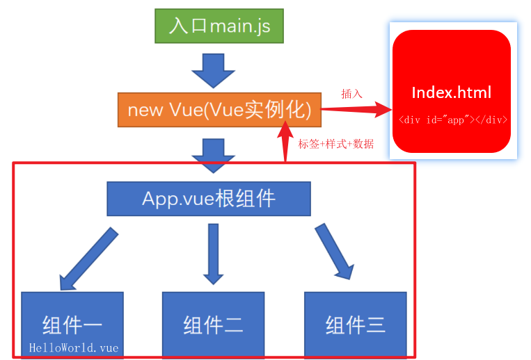

Webpack
webpack本身是node的一个第三方模块包, 用于打包代码。把很多文件打包整合到一起, 缩小项目体积, 提高加载速度。
nodejs 可以支持本地文件的操作，也就是文件读写，webpack 基于此提供了编译前端代码的功能，使得我们可以在前端代码开发的过程中选择我们喜欢的框架和预编译语言。 nodejs 也可以支持搭建网络服务，webpack 基于此提供了开发环境的搭建，使得我们可以轻松的在本地构建服务调试我们的前端代码。
webpack的使用步骤
默认入口: ./src/index.js
默认出口: ./dist/main.js
注意:路径上, 文件夹, 文件名不能叫webpack/其他已知的模块名
初始化包环境
yarn init安装依赖包
yarn add webpack webpack-cli -D配置scripts(自定义命令)
scripts: { "build": "webpack" }新建目录src
新建src/add/add.js - 定义求和函数导出
export const addFn = (a, b) => a + b新建src/index.js导入使用
import {addFn} from './add/add' console.log(addFn(10, 20));运行打包命令
yarn build #或者 npm run build
总结: src并列处, 生成默认dist目录和打包后默认main.js文件
webpack 更新打包
新建src/tool/tool.js - 定义导出数组求和方法
export const getArrSum = arr => arr.reduce((sum, val) => sum += val, 0)src/index.js - 导入使用
import {addFn} from './add/add' import {getArrSum} from './tool/tool' console.log(addFn(10, 20)); console.log(getArrSum([1, 2, 3]));重新打包
yarn build
总结1: src下开发环境, dist是打包后, 分别独立
总结2: 打包后格式压缩, 变量压缩等
webpack的配置
webpack-入口和出口
webpack配置 - webpack.config.js(默认)
- 新建src并列处, webpack.config.js
- 填入配置项
const path = require("path")
module.exports = {
entry: "./src/main.js", // 入口
output: {
path: path.join(__dirname, "dist"), // 出口路径
filename: "bundle.js" // 出口文件名
}
}- 修改package.json, 自定义打包命令 - 让webpack使用配置文件
"scripts": {
"build": "webpack"
},打包流程图

webpack 开发服务器
起一个开发服务器, 在电脑内存中打包, 缓存一些已经打包过的内容, 只重新打包修改的文件, 最终运行加载在内存中给浏览器使用
webpack-dev-server自动刷新
启动本地服务, 可实时更新修改的代码, 打包变化代码到内存中, 然后直接提供端口和网页访问
下载包
yarn add webpack-dev-server -D配置自定义命令
scripts: { "build": "webpack", "serve": "webpack serve" }运行命令-启动webpack开发服务器
yarn serve #或者 npm run serve
总结: 以后改了src下的资源代码, 就会直接更新到内存打包, 然后反馈到浏览器上了
webpack-dev-server配置
在webpack.config.js中添加服务器配置
更多配置参考这里: https://webpack.docschina.org/configuration/dev-server/#devserverafter
module.exports = {
// ...其他配置
devServer: {
port: 3000 // 端口号
}
}Vue
渐进式javacript框架, 一套拥有自己规则的语法
Vue包含：声明式渲染，组件系统，客户端路由，大规模状态管理，构建工具
@vue/cli脚手架
webpack自己配置环境很麻烦, 下载@vue/cli包,用vue命令创建脚手架项目
@vue/cli是Vue官方提供的一个全局模块包(得到vue命令), 此包用于创建脚手架项目
脚手架是为了保证各施工过程顺利进行而搭设的工作平台
@vue/cli 目录和代码分析
vuecil-demo # 项目目录
├── node_modules # 项目依赖的第三方包
├── public # 静态文件目录
├── favicon.ico# 浏览器小图标
└── index.html # 单页面的html文件(网页浏览的是它)
├── src # 业务文件夹
├── assets # 静态资源
└── logo.png # vue的logo图片
├── components # 组件目录
└── HelloWorld.vue # 欢迎页面vue代码文件
├── App.vue # 整个应用的根组件
└── main.js # 入口js文件
├── .gitignore # git提交忽略配置
├── babel.config.js # babel配置
├── package.json # 依赖包列表
├── README.md # 项目说明
└── yarn.lock # 项目包版本锁定和缓存地址主要文件及含义
node_modules下都是下载的第三方包
public/index.html – 浏览器运行的网页
src/main.js – webpack打包的入口文件
src/App.vue – vue项目入口页面
package.json – 依赖包列表文件@vue/cli 项目架构了解
@vue/cli 自定义配置
src并列处新建vue.config.js
/* 覆盖webpack的配置 */
module.exports = {
devServer: { // 自定义服务配置
open: true, // 自动打开浏览器
port: 3000
}
}@vue/cli 单vue文件讲解
Vue推荐采用.vue文件来开发项目
template里只能有一个根标签
vue文件-独立模块-作用域互不影响
style配合scoped属性, 保证样式只针对当前template内标签生效
vue文件配合webpack, 把他们打包起来插入到index.html
<!-- template必须, 只能有一个根标签, 影响渲染到页面的标签结构 -->
<template>
<div>欢迎使用vue</div>
</template>
<!-- js相关 -->
<script>
export default {
name: 'App'
}
</script>
<!-- 当前组件的样式, 设置scoped, 可以保证样式只对当前页面有效 -->
<style scoped>
</style>
最终: Vue文件配合webpack, 把他们打包起来插入到index.html, 然后在浏览器运行
Vue指令
插值表达式
语法:
<template>
<div>
<h1>{{ msg }}</h1>
<h2>{{ obj.name }}</h2>
<h3>{{ obj.age > 18 ? '成年' : '未成年' }}</h3>
</div>
</template>
<script>
export default {
data() { // 格式固定, 定义vue数据之处
return { // key相当于变量名
msg: "hello, vue",
obj: {
name: "vue",
age: 5
}
}
}
}
</script>
<style>
</style>
总结: dom中插值表达式赋值, vue的变量必须在data里声明
vue基础-MVVM设计模式
转变思维, 用数据驱动视图改变, 操作dom的事, vue源码内干了
MVVM通过数据双向绑定让数据自动地双向同步 不再需要操作DOM
- V（修改视图） -> M（数据自动同步）
- M（修改数据） -> V（视图自动同步）
在vue中，通过数据驱动视图，不要在想着怎么操作DOM，而是想着如何操作数据！！
v-bind
给标签属性设置vue变量的值
vue指令, 实质上就是特殊的 html 标签属性, 特点: v- 开头
每个指令, 都有独立的作用
- 语法：
v-bind:属性名="vue变量" - 简写：
:属性名="vue变量"
<!-- vue指令-v-bind属性动态赋值 -->
<a v-bind:href="url">我是a标签</a>
<img :src="imgSrc">把vue变量的值, 赋予给dom属性上, 影响标签显示效果
v-on
给标签绑定事件
- 语法
- v-on:事件名=”要执行的少量代码”
- v-on:事件名=”methods中的函数”
- v-on:事件名=”methods中的函数(实参)”
- 简写: @事件名=”methods中的函数”
<!-- vue指令: v-on事件绑定-->
<p>你要买商品的数量: {{count}}</p>
<button v-on:click="count = count + 1">增加1</button>
<button v-on:click="addFn">增加1个</button>
<button v-on:click="addCountFn(5)">一次加5件</button>
<button @click="subFn">减少</button>
<script>
export default {
// ...其他省略
methods: {
addFn(){ // this代表export default后面的组件对象(下属有data里return出来的属性)
this.count++
},
addCountFn(num){
this.count += num
},
subFn(){
this.count--
}
}
}
</script>总结: 常用@事件名, 给dom标签绑定事件, 以及=右侧事件处理函数
v-on修饰符
在事件后面.修饰符名 - 给事件带来更强大的功能
- 语法:
- @事件名.修饰符=”methods里函数”
- .stop - 阻止事件冒泡
- .prevent - 阻止默认行为
- .once - 程序运行期间, 只触发一次事件处理函数
- @事件名.修饰符=”methods里函数”
代码演示
<template>
<div @click="fatherFn">
<!-- vue对事件进行了修饰符设置, 在事件后面.修饰符名即可使用更多的功能 -->
<button @click.stop="btn">.stop阻止事件冒泡</button>
<a href="http://www.baidu.com" @click.prevent="btn">.prevent阻止默认行为</a>
<button @click.once="btn">.once程序运行期间, 只触发一次事件处理函数</button>
</div>
</template>
<script>
export default {
methods: {
fatherFn(){
console.log("father被触发");
},
btn(){
console.log(1);
}
}
}
</script>总结: 修饰符给事件扩展额外功能
v-on按键修饰符
给键盘事件, 添加修饰符, 增强能力
- 语法:
- @keyup.enter - 监测回车按键
- @keyup.esc - 监测返回按键
代码演示
<template>
<div>
<input type="text" @keydown.enter="enterFn">
<hr>
<input type="text" @keydown.esc="escFn">
</div>
</template>
<script>
export default {
methods: {
enterFn(){
console.log("enter回车按键了");
},
escFn(){
console.log("esc按键了");
}
}
}
</script>v-model
把value属性和vue数据变量, 双向绑定到一起，将数据填充进去
- 语法: v-model=”vue数据变量”
- 双向数据绑定
- 数据变化 -> 视图自动同步
- 视图变化 -> 数据自动同步
v-model修饰符
让v-model拥有更强大的功能
- 语法:
- v-model.修饰符=”vue数据变量”
- .number 以parseFloat转成数字类型
- .trim 去除首尾空白字符
- .lazy 在change时触发而非inupt时
- v-model.修饰符=”vue数据变量”
代码演示
<template>
<div>
<div>
<span>年龄:</span>
<input type="text" v-model.number="age">
</div>
<div>
<span>人生格言:</span>
<input type="text" v-model.trim="motto">
</div>
<div>
<span>自我介绍:</span>
<textarea v-model.lazy="intro"></textarea>
</div>
</div>
</template>
<script>
export default {
data() {
return {
age: "",
motto: "",
intro: ""
}
}
}
</script>v-text和v-html
更新DOM对象的innerText/innerHTML
- 语法:
- v-text=”vue数据变量”
- v-html=”vue数据变量”
- 注意: 会覆盖插值表达式
<template>
<div>
<p v-text="str"></p>
<p v-html="str"></p>
</div>
</template>
<script>
export default {
data() {
return {
str: "<span>我是一个span标签</span>"
}
}
}
</script>v-text把值当成普通字符串显示, v-html把值当做html解析
v-show和v-if
控制标签的隐藏或出现
- 语法:
- v-show=”vue变量”
- v-if=”vue变量”
- 原理
- v-show 用的display:none隐藏 (频繁切换使用)
- v-if 直接从DOM树上移除
- 高级
- v-else使用
<template>
<div>
<h1 v-show="isOk">v-show的盒子</h1>
<h1 v-if="isOk">v-if的盒子</h1>
<div>
<p v-if="age > 18">我成年了</p>
<p v-else>还得多吃饭</p>
</div>
</div>
</template>
<script>
export default {
data() {
return {
isOk: true,
age: 15
}
}
}
</script>使用v-show和v-if以及v-else指令, 方便通过变量控制一套标签出现/隐藏
v-for
列表渲染, 所在标签结构, 按照数据数量, 循环生成
语法
- v-for=”(值, 索引) in 目标结构”
- v-for=”值 in 目标结构”
目标结构:
- 可以遍历数组 / 对象 / 数字 / 字符串 (可遍历结构)
注意:
v-for的临时变量名不能用到v-for范围外
<template>
<div id="app">
<div id="app">
<!-- v-for 把一组数据, 渲染成一组DOM -->
<p>学生姓名</p>
<ul>
<li v-for="(item, index) in arr" :key="item">
{{ index }} - {{ item }}
</li>
</ul>
<p>学生详细信息</p>
<ul>
<li v-for="obj in stuArr" :key="obj.id">
<span>{{ obj.name }}</span>
<span>{{ obj.sex }}</span>
<span>{{ obj.hobby }}</span>
</li>
</ul>
<!-- v-for遍历对象(了解) -->
<p>老师信息</p>
<div v-for="(value, key) in tObj" :key="value">
{{ key }} -- {{ value }}
</div>
<!-- v-for遍历整数(了解) - 从1开始 -->
<p>序号</p>
<div v-for="i in count" :key="i">{{ i }}</div>
</div>
</div>
</template>
<script>
export default {
data() {
return {
arr: ["小明", "小欢", "小马"],
stuArr: [
{
id: 1001,
name: "小杨",
sex: "男",
hobby: "打电动",
},
{
id: 1002,
name: "小朱",
sex: "男",
hobby: "开导",
},
],
tObj: {
name: "小侯",
age: 18,
class: "信安",
},
count: 10,
};
},
};
</script>vue最常用指令, 铺设页面利器, 快速把数据赋予到相同的dom结构上循环生成